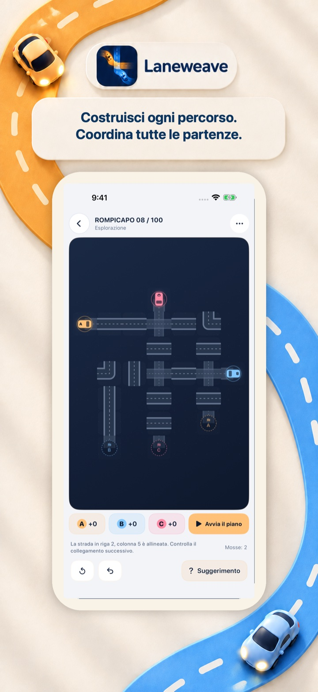
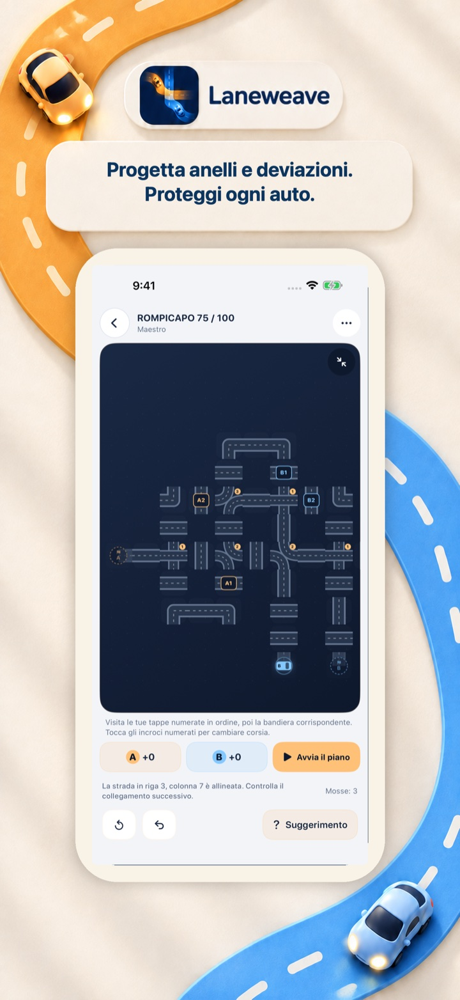
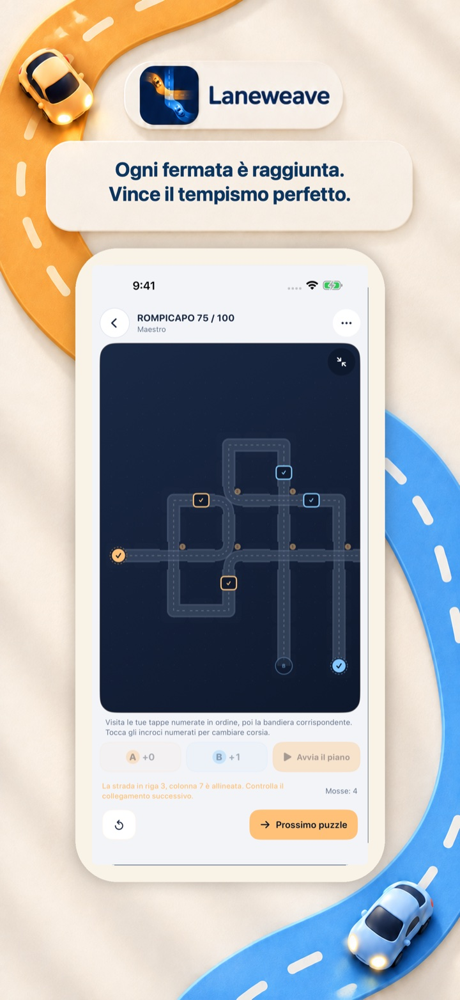
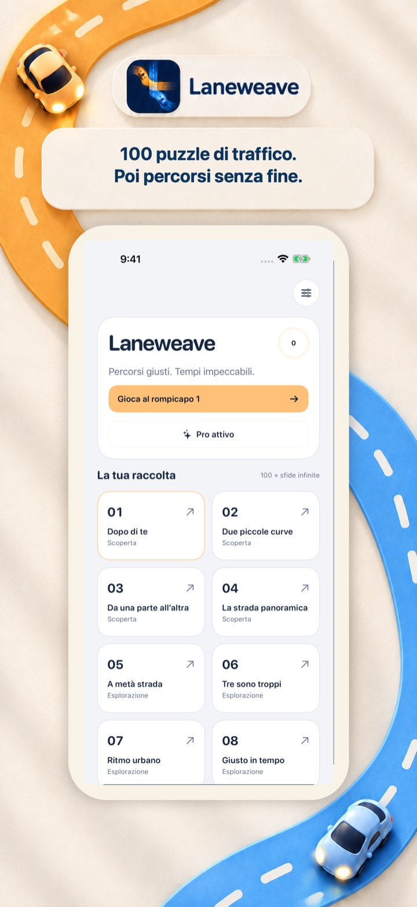

100 puzzle curati
Una progressione progettata con profondità logica o spaziale crescente.
Laneweave
Progetta il percorso. Perfeziona i tempi.
In arrivo sull’App Store

Guarda l’idea in movimento
I primi puzzle propongono viaggi chiari e diretti. Le griglie avanzate aggiungono caselle condivise, anelli, deviazioni e passaggi ripetuti: premiano una vera pianificazione, non soltanto la strada più breve.
Mondi di puzzle
Ogni gioco inizia con una raccolta di 100 puzzle curati. Dopo averla completata, le sfide infinite mantengono aperte le stesse regole per nuovi problemi.
Una progressione progettata con profondità logica o spaziale crescente.
Continua a esplorare dopo la raccolta principale.
Ragiona, prova, annulla e impara al tuo ritmo.
Dentro il gioco
Le quattro viste seguono la sequenza App Store approvata: meccanica principale, puzzle più profondo, stato risolto e raccolta.



Gioca gratis. Pro quando vuoi.
Il gioco è gratuito. Nella versione gratuita può apparire un annuncio interstitial dopo alcuni puzzle completati e puoi guardare un annuncio con premio per ottenere un suggerimento.
L’acquisto una tantum Pro rimuove gli annunci e rende i suggerimenti subito disponibili.
Scopri un altro mondo di puzzle
Cambia meccanica senza uscire dalla raccolta.